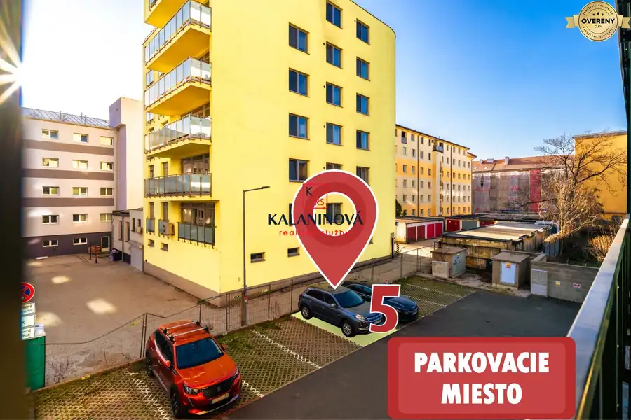
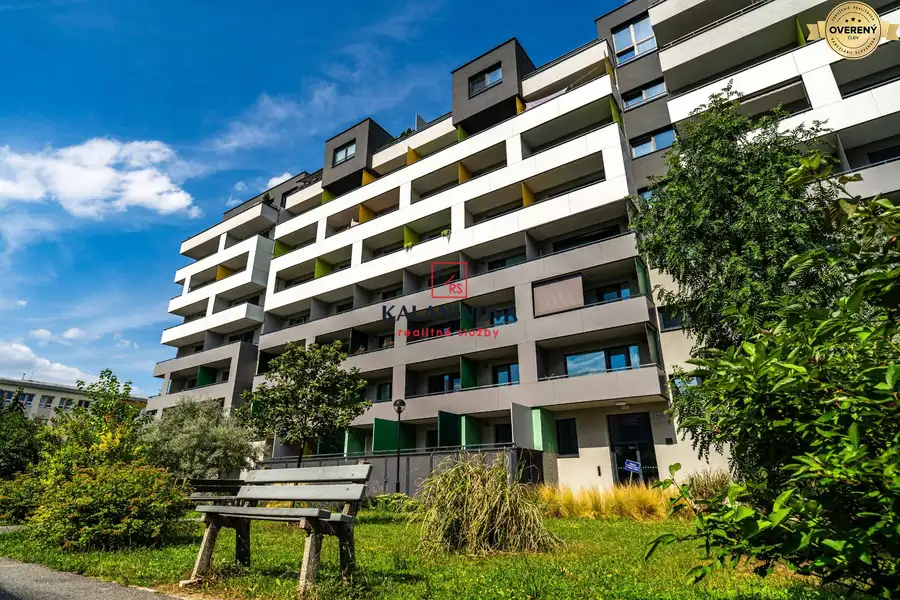
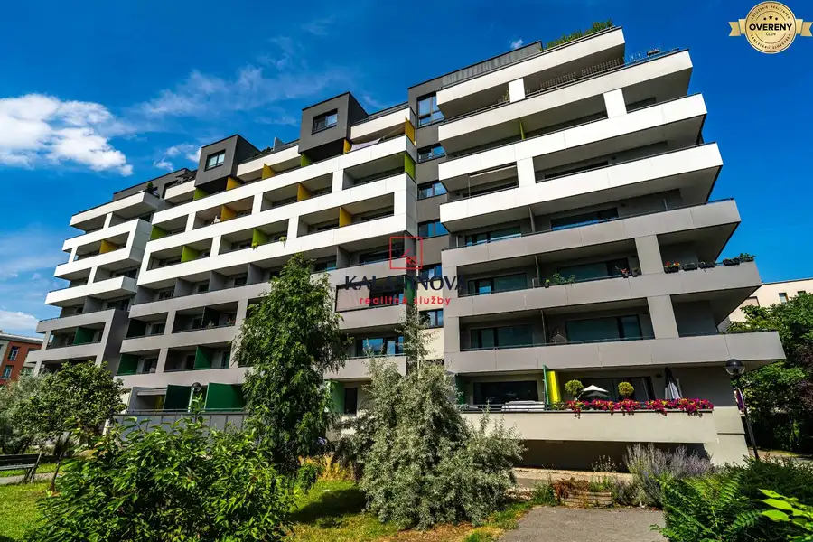
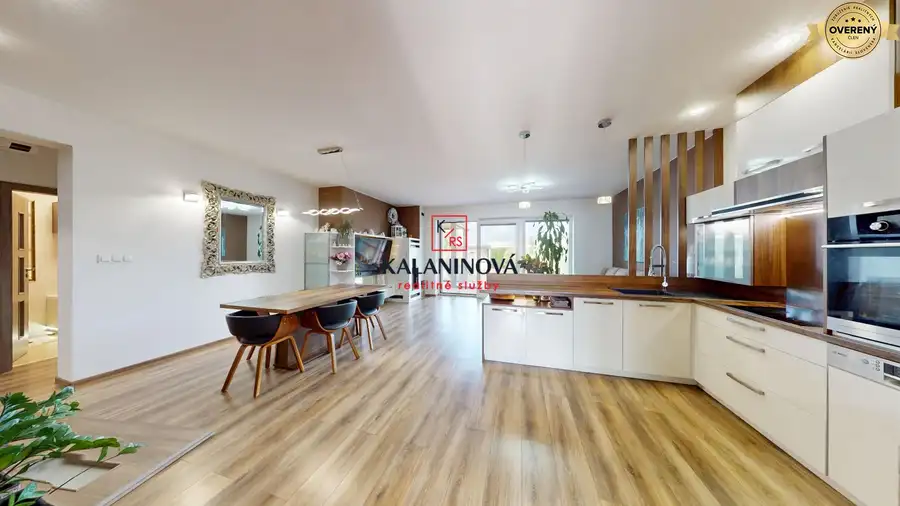
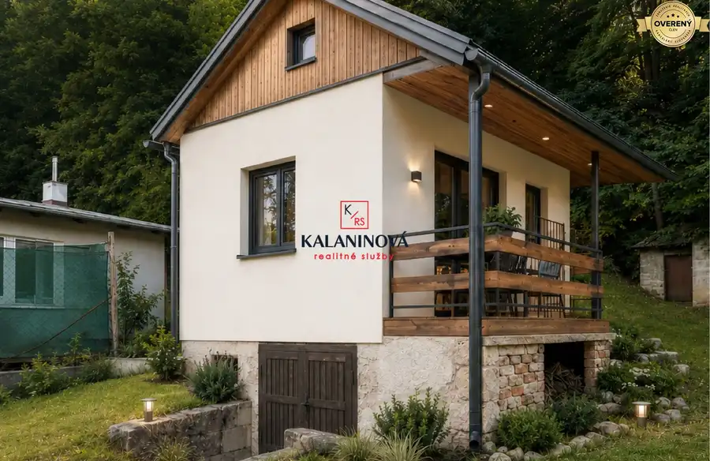

PRENÁJOM parkovacieho miesta, Košice – Staré Mesto, ul. Strojárenská
mestská časť Staré Mesto, Košice




- Plocha11 m²
- Poschodie0.
- Vlastníctvoosobné
O nehnuteľnosti
Ponúkame na prenájom vonkajšie parkovacie miesto o výmere 11 m² pri bytovom dome Rezidencia pri Radnici, Strojárenská 11F, Košice – Staré Mesto.
Rezidencia pri Radnici predstavuje spojenie historického centra Košíc s modernou architektúrou. Bytový komplex bol dokončený v r. 2018.
Ak sa rozhodnete prenajať si parkovacie miesto, nebudete musieť riešiť otázku, či „budem mať kde zaparkovať, keď prídem domov“.
Areál je uzatvorený a vstup k parkovaciemu miestu je cez rampu na diaľkové ovládanie.
Parkovanie je vhodné nielen pre obyvateľov Rezidencie pri Radnici, ale aj pre obyvateľov susedných bytových domov a ulíc – Jesenná, Hviezdoslavova, Československej armády, Komenského a okolia. Vhodné je aj pre ľudí pracujúcich v blízkom okolí či centre mesta.
Voľné ihneď.
Cena: 60€ /mesiac. Dvojmesačný DEPOZIT.
MÁTE DVE AUTÁ?
K dispozícii je aj ďalšie parkovacie státie v hromadnej podzemnej garáži o výmere cca 13 m² v novostavbe Rezidencia pri Radnici, Strojárenská 11F.
Parkovacie státie sa nachádza na podlaží: -1. mezanín. Areál je uzatvorený a vstup je cez rampu na diaľkové ovládanie. Vjazd do podzemnej garáže je cez garážovú bránu, ktorá sa ovláda tým istým diaľkovým ovládačom.
Garáž je zabezpečená a monitorovaná kamerovým systémom. Je suchá, čistá a počas celého roka si udržiava stabilnejšiu teplotu. Vaše vozidlo tak bude chránené pred dažďom, snehom, mrazom aj letným prehrievaním.
Voľné ihneď.
Cena: 100€ / mesiac.
Obe parkovacie miesta je možné prenajať aj samostatne.
Parametre
- Rozloha pozemku
- 11 m²
- Zastavaná plocha
- 11 m²
- Úžitková plocha
- 11 m²
- Poschodie
- prízemie
- Vlastníctvo
- osobné
- Status
- aktívne
- Voda
- nie
- El. napätie
- nie
- Plyn
- nie
- Kanalizácia
- nie
- Postavené z
- iné
- Terén
- rovina
- Prístupová cesta
- asfaltová cesta
- Dátum zverejnenia
- 2026-09-12
Kde to je
Mohlo by Vás zaujímať

Rodinné domyNové 419 900 €PREDAJ: zariadená novostavba rodinného domu, na začiatku Košice–Krásna mestská časť Krásna, Košice 4-izbový91 m²
Chaty a chalupyNové 69 000 €Na predaj chata pri lese, Kostoľany nad Hornádom, Košice-okolie Okolie 2-izbový35 m² OstatnéNové 100,- €/mes.PRENÁJOM: vnútorné parkovacie státie, Košice-centrum, Strojárenská mestská časť Staré Mesto, Košice 13 m²